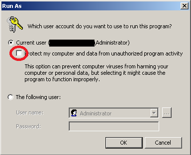

- Hoe je het installeert:
- Installeer Microsoft Visual C++ Redistributable 2013 (x86)
- Verlaat de PvP.net Client en/of Game
- voer LoLUpdater.exe uit en selecteer de juiste folder:
- Gewone LoL:
Riot Games\League of Legends(waarlol.launcher.exeis) - Garena LoL:
GarenaLoL\GameData\Apps\LoL(waarlol.exeis) - LoLQQ (Chinese LoL):
腾讯游戏\英雄联盟(waarlol.launcher_tencent.exeis)
wacht (Duurt minder dan 1 minuut op een SSD), daarna geniet! (Sluit LoLUpdater als het klaar is) - Gewone LoL:
- Voer het zo uit op Windows XP:
- Je kan na elke Patch van League of Legends gewoon LoLUpdater opnieuw uitvoeren, dit zal geen negatief effect hebben.

- Handmatige installatie: (click)
- Hoe unblock je een bestand:
- Op Windows XP heb je dit nodig om bestanden te unblocken. extract en voer uit "Unblock.bat" in de zelfde map met het bestand dat moet worden geunblocked (Wijzig Unblock.bat en verander het bestands naam)
- Installeer Adobe Air en NvidiaCG (Maakt niet uit als je een ATI grafische kaart hebt), unblock de installers.
- Verplaats
cg.dll,cgGL.dllencgD3D9.dllvan%WindowsDrive%:\Program Files (x86)\NVIDIA Corporation\Cg\binnaar%leaguedirectory%\RADS\solutions\lol_game_client_sln\releases\%Latest%\deploy - Kopieer
Adobe AIR.dllvan%WindowsDrive%:\Program Files (x86)\Common Files\Adobe AIR\Versions\1.0naar%leaguedirectory%\RADS\projects\lol_air_client\releases\%Latest%\deploy\Adobe AIR\Versions\1.0(zetNPSWF32.dllin deResourcesfolder) - Download CPU-Z en check welke SIMD instructies jouw CPU supporten en download de goeie (
AVX2 > AVX > SSE2):AVX2,AVX,SSE2orWinXPen zet het in de zelfde folder als de Cg bestanden (zie hierboven), hernoem het naartbb.dllen unblock het. -
Download
msvcp120&msvcr120en kopieer ze naar de zelfde plaats alscg.dll(Zie hierboven), unblock beide bestanden. -
Je kunt ook de twee vorige bestanden kopieeren en verplaatsen naar
%leaguedirectory%\RADS\projects\lol_patcher\releases\%Latest%\deploy - Nu ben je vrij om te spelen! (Herhaal elke patch!)
Rechtermuisknop -> Eigenschappen -> Unblock